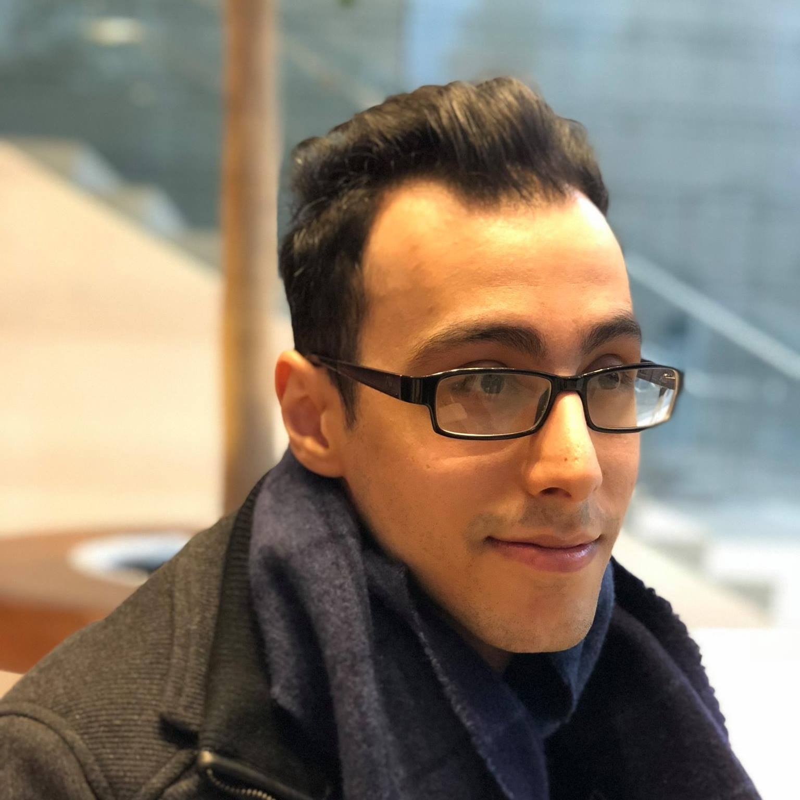

I am currently a graduate student in Biophysics at the University of Chicago.
I am co-advised by Xin He and Oni Basu.
My research focus is on bioinformatics and computational biology. In particular, I study cancer genomics and transcriptomics.
Currently, I am integrating whole-genome sequencing data with single-cell RNA-seq data from tumors in order to correlate driver mutations
and transcriptional programs.
In the past, I have worked on analyzing single-cell RNA-seq data in differentiation studies.
June 9th, 2018
I will be joining the Ancestry DNA team this summer as a Bioinformatics/Computational Biology Intern!
August 23, 2016
Starting my program in Biophysics at the University of Chicago!
A. Selewa, et al. "Systematic Comparison of High-throughput Single-Cell and Single-Nucleus Transcriptomes during Cardiomyocyte Differentiation,"
In preparation. (2019).
X. Huang, A. Selewa, et al. "3D snapshot microscopy of extended objects," arXiv preprint arXiv:1802.01565, (2018).
S. Banerjee, K. Lo, M.K. Daddysman, A. Selewa, T. Kuntz, A.R. Dinner, N.F. Scherer, “Biphasic growth dynamics control cell division in Caulobacter crescentus,” Nat. Microbiol. 2, 17116 (2017).
T. Huynh, M.K. Daddysman, Y. Bao, A. Selewa, A. Kuznetsov, L.H. Philipson, N.F. Scherer, “Correlative imaging across microscopy platforms using the fast and accurate relocation of microscopic experimental regions (FARMER) method,” Rev. Sci. Instrum. 88, 15. (2017).